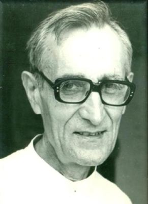

Sluge Božji
Isusovac · Svećenik · Misionar
Sluga Božji Ante Gabrić
1915. – 1988.
Hrvatski isusovac i misionar u Bengalu povezivao je naviještanje Evanđelja sa skrbi za siromašne, izgradnjom škola i pomaganjem djeci, bolesnima i udovicama.
Izvor slike


Izvor slike
- Spomendan
- 20. listopada
- Zaštitništvo
- Nije navedeno u izvoru
- Životni vijek
- 1915. – 1988.
- Djelovanje
- Misije i evangelizacija · Obrazovanje i poučavanje vjere · Siromašni i isključeni · Bolesnici i umirući · Radnici i društvena pravda · Dijalog i pomirenje
- Razdoblje
- 20. stoljeće
- Crkveni naslov
- Sluga Božji
- Rođenje
- 28. veljače 1915., Metković
- Smrt
- 20. listopada 1988., kod Calcutte
- Svećeničko ređenje
- 21. studenoga 1943., Calcutta
- Početak misije u Indiji
- 1938.
- Otvaranje biskupijskog postupka
- 28. veljače 2015., Zagreb
- Počivalište
- Misijska postaja Maria Polli, Indija
U kalendaru zbirke naveden je dan smrti.
Životopis
Ante Gabrić rođen je 28. veljače 1915. u Metkoviću, kao osmo od devetero djece Petra i Katarine. Najprije se ugledao u svojega franjevačkog župnika, ali susret s dvojicom isusovačkih misionara usmjerio ga je prema Travniku. Ondje se školovao od 1926.; novicijat je započeo 1933., a prve zavjete položio 1935. Nakon studija filozofije u Italiji 1938. otišao je u Indiju.
U Calcuttu je stigao 5. studenoga. Prije bogoslovlja u Kurseongu učio je engleski i bengalski, a za svećenika je zaređen 21. studenoga 1943. Slijedile su službe u Morapaiju, Ranchiju i Boshontiju. Od 1975. posljednje je razdoblje rada vezao uz Maria Polli. Živio je među katolicima, hindusima i muslimanima na močvarnom području Bengalske nizine, putujući selima bez sigurnih putova i mostova.
Njegov apostolat uključivao je škole, prehranu djece, bolnicu, zanatsko obrazovanje i osposobljavanje ljudi za samostalniji život. Rižinim bankama pomagao je seljacima izbjeći lihvare, a domovima i sirotištima štitio udovice i djecu bez oslonca. U Maria Polliju i obližnjem Isusovu selu razvio je blagajnu solidarnosti: zajednica je malim mjesečnim doprinosima stvarala zalihu za članove u nevolji. Popravljao je nasipe, kanale i vrtove, povezujući materijalnu pomoć s rastom župne zajednice.
Suradnja s Majkom Terezijom i pisma, osobito u Malom Koncilu i publikaciji Tamo gdje palme cvatu, približavali su misije hrvatskim dobročiniteljima. Domovinu je prvi put ponovno posjetio 1969.; pamte se i solinsko slavlje 1976. te Križni put s Majkom Terezijom 1978. Umro je 20. listopada 1988. Pokopan je u Maria Polliju uz vjernike različitih religija, s hrvatskom zemljom i jadranskom vodom. Zagrebački biskupijski postupak otvoren je 28. veljače 2015.
Život i nasljeđe
U jednome tekstu objavljenom na stranici Isusovaca Gabrić opisuje dovršavanje krova kapelice u Gosabi pred tropsku oluju. Uz njega rade majstor Ivan i katehist Bidhu, a obitelj mjesne vjernice Cecilije priprema hranu iscrpljenim radnicima. Takvi imenovani suradnici otkrivaju koliko je misija ovisila o ljudima iz same zajednice. Nastavak puta prema Bošontiju uključuje opasan riječni prijelaz i hod kroz nevrijeme. Njegov vlastiti pripovjedni zapis približava fizičke uvjete službe: vodu, blato, krhke građevine i udaljenosti koje su svakodnevno određivale pastoralni rad u Bengaliji.
Pročitaj više na izvornoj stranici ↗